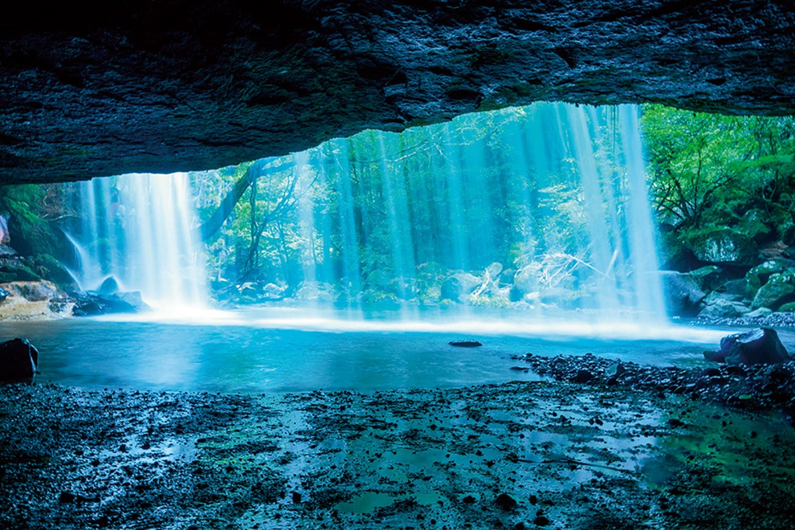
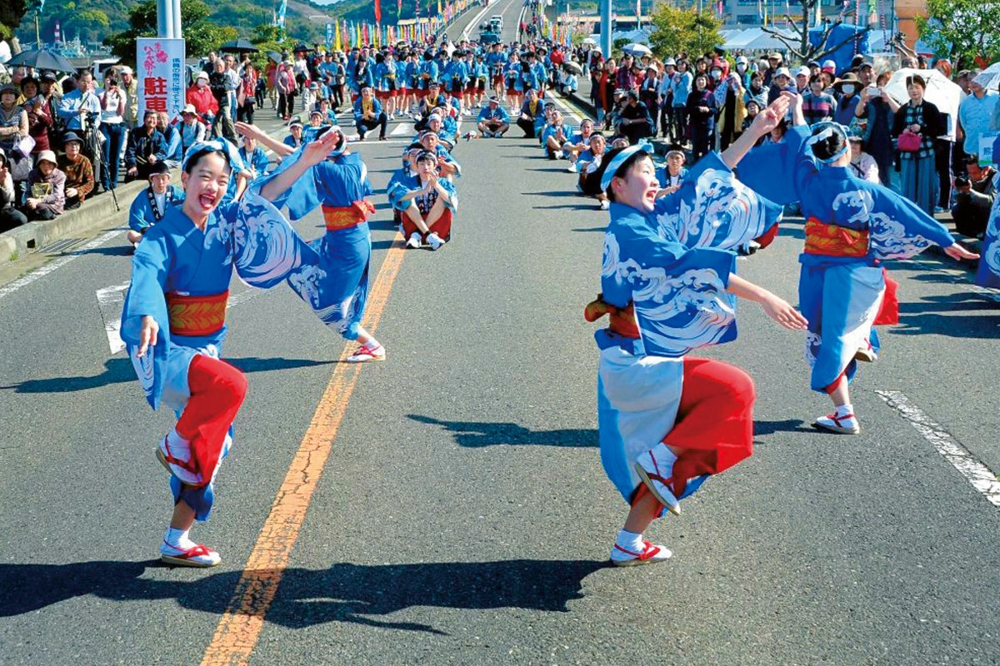
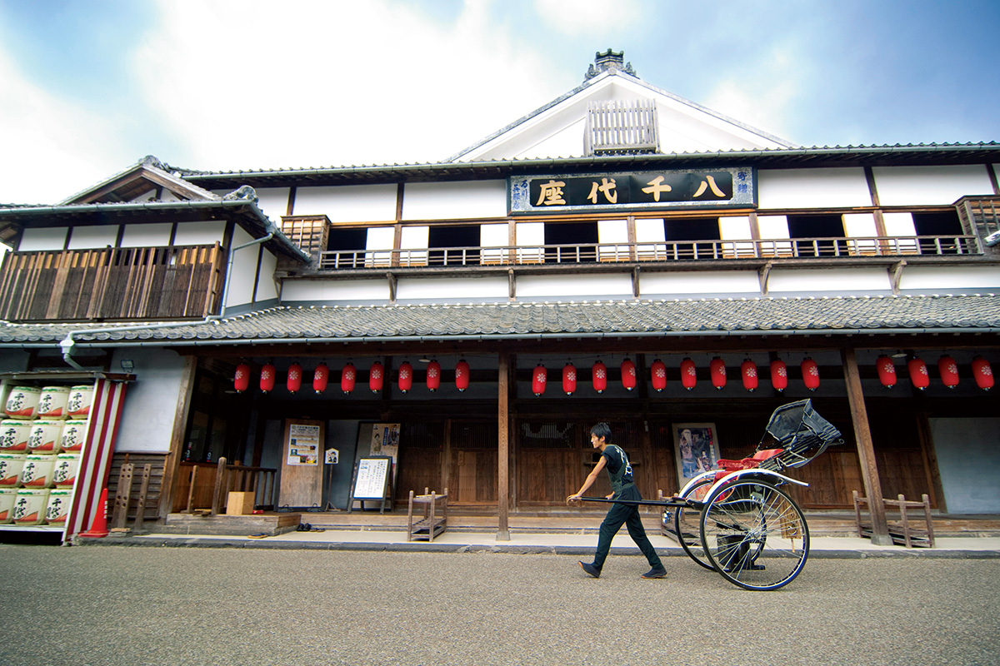
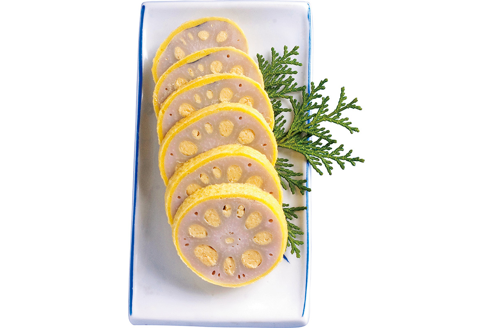
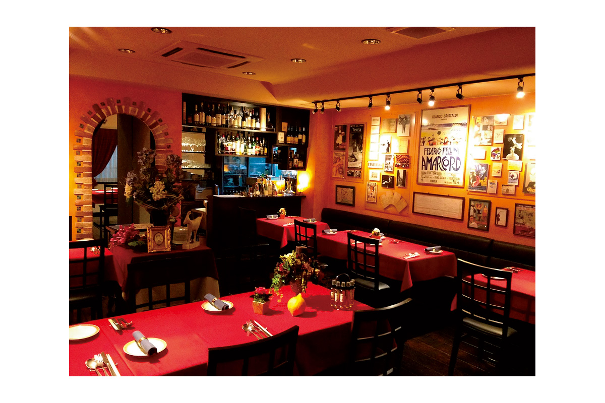
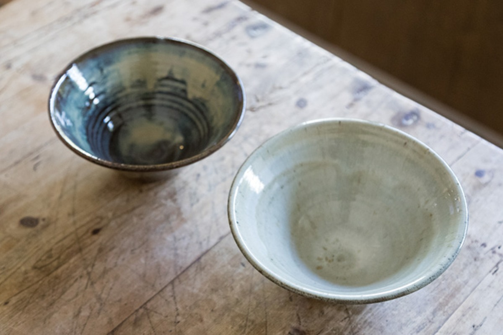
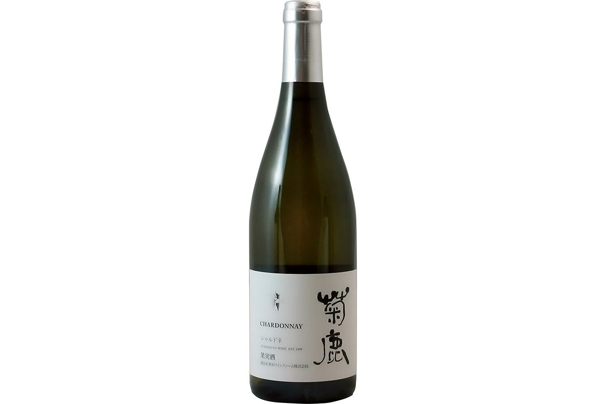
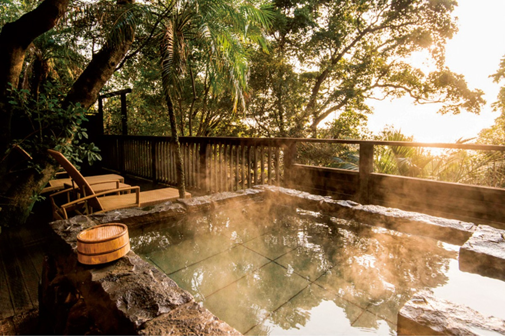

Префектура Кумамото
Кумамото: страна огня, вулкан Асо и медвежонок Кумамон

Водопад падает широкой завесой, а за ней открывается пещера, откуда видно воду и зелень.
Здесь стоит один из трёх главных замков страны, дымит вулкан с одной из крупнейших кальдер мира и продают лотос с горчицей внутри. Рассказываем, за чем ехать в Кумамото.
О префектуре
Земля вулкана и рисовых полей
На востоке Кумамото поднимается вулкан Асо, на западе лежат моря Ариакэ и Яцусиро с островами Амакуса, и пейзажи здесь сменяются очень быстро. Древние стоянки остались тут ещё со времён палеолита, а саму область, которую звали страной огня, после похода Тоётоми Хидэёси на Кюсю поделили между собой Като Киёмаса на севере и Кониси Юкинага на юге. Когда Киёмаса собрал под своей рукой почти все земли, он занялся укрощением рек, прокладкой оросительных каналов и осушением морских отмелей, и с тех пор Кумамото славится рисом.
Замок Кумамото, который построил Киёмаса, входит в число трёх главных замков Японии, а вулкан Асо с одной из крупнейших кальдер в мире вместе с ним составляет две главные достопримечательности префектуры. Землетрясение 2016 года повредило почти весь край, но восстановление идёт уверенно.
Звезда местных жителей это медвежонок Кумамон, персонаж, который появился к открытию всей линии скоростной железной дороги Кюсю. Он числится начальником отдела продаж и отдела счастья префектуры и рассказывает о Кумамото по всей стране.
Что посмотреть
Водопад, за который можно зайти
Парк Набэгатаки
Это редкий водопад, который смотрят с обратной стороны, поэтому его второе имя значит «водопад, видный изнутри». Высота у него всего около десяти метров, зато ширина около двадцати, и вода падает как занавес, а за струями есть проход.
- Адрес
- 4401 Kurobuchi, Oguni, Aso, Kumamoto
- Справки
- информационный отдел администрации посёлка Огуни
- Телефон
- +81 967-46-2113
Что ещё посмотреть
- Замок Кумамото, крепость, которую считают одной из трёх главных в стране
- Вулкан Асо, гора с одной из крупнейших кальдер мира
- Смотровая площадка Даиканбо, высшая точка края Асо с видом на кальдеру
Праздники
Танец, который придумали для моряков
Усибука хайя-мацури
Песня хайя из Усибуки началась с того, что местные жители песнями и танцами принимали моряков, чьи корабли заходили в порт. Сегодня главное зрелище праздника это общий танец, в котором участвует около трёх тысяч человек.

- Период
- третья суббота апреля, три дня с пятницы по воскресенье
- Место
- центральные кварталы города Усибука, город Амакуса
Другие праздники
- Обряд огня в святилище Асо, зимний обряд с горящими факелами
- Праздник Мёкэн в Яцусиро, осеннее шествие у святилища
- Фестиваль фонарей в Ямага, праздник с фонарями и танцами
Музеи и архитектура
Театр, который спасли горожане
Ятиёдза
Этот театральный дом построили в 1910 году, и в нём сохранились черты традиционного зодчества эпохи Эдо. Со временем театр закрылся, но горожане тридцать лет собирали деньги и восстанавливали его, и в итоге здание получило статус важной культурной ценности страны.

- Адрес
- 1499 Yamaga, Yamaga, Kumamoto
- Телефон
- +81 968-44-4004
Что ещё посмотреть
- Художественный музей префектуры, собрание живописи и графики
- Мост Цудзюнкё, старый каменный водовод с арками
- Святилище Аои-Асо, древнее святилище с богатой резьбой
Местная кухня
Лотос с горчицей внутри
Караси-рэнкон
Блюдо появилось так: дзэнский монах пожалел больного князя Хосокаву Тадатоси и посоветовал ему есть корень лотоса. Горчичная паста внутри напоминает о лекарстве, а рисунок на срезе похож на родовой знак Хосокава, поэтому рецепт долго держали в секрете и за пределы княжества не выпускали.

Что ещё попробовать
- Басаси, сырая конина, тонко нарезанная
- Тайпиэн, лапша со свининой, яйцом и морепродуктами
- Касуёсэ, тушёная рыба с дрожжевой гущей сакэ
Где поесть
Итальянская кухня из местной говядины
Ристоранте Миямото
Хозяин этого ресторана получил награду кулинарного конкурса в самом молодом возрасте за всю его историю и строит меню на местных продуктах. Главная гордость это блюда из мраморной говядины ака-гю, которую выращивают в префектуре.

- Адрес
- 6-15 Karashima-machi, Chuo, Kumamoto
- Телефон
- +81 96-356-5070
- Часы
- с 11:30 до 14:30 и с 17:30 до 23:00, в воскресенье и праздники с 11:30 до 14:30 и с 17:30 до 22:00
- Выходные
- воскресенье
Ремёсла
Керамика, которую обжигают по-своему
Печь Мидзухо
Керамику кода-яки делят на три цвета: синий, жёлтый и белый. В мастерской Мидзухо работают с местными глазурями, наносят белую глазурь техникой наливки и обжигают по собственному способу, чтобы посуда подходила современному столу.

- Почта
- mizuhogama@gmail.com
Что привезти
Вино со склонов страны огня
Шардоне «Кикука»
Виноделы используют особенности местной земли, сами ухаживают за лозой и собирают качественный виноград, поэтому вино не раз получало награды на конкурсах. Бутылка 750 миллилитров стоит 2913 иен.

- Телефон
- +81 96-275-2277
Где остановиться
Рёкан «пять футов» на берегу Амакуса
Исияма рикю «Госоку-но куцу»
Этот рёкан придумали с мыслью о том, что Амакуса это не Япония и не Кюсю, а часть Азии: отсюда и необычное убранство. На ужин здесь подают кайсэки, то есть парадное угощение, где главное место занимает рыба из местных вод.

- Адрес
- 2237 Shimodakita, Amakusa-machi, Amakusa, Kumamoto
- Телефон
- +81 969-45-3633
- Комнат
- 15
- Цена
- от 25 000 иен за ночь с двумя приёмами пищи и обслуживанием, налоги и банный сбор отдельно
- Сайт
- rikyu5.jp
Местный диалект
Как здесь говорят «очень вкусно»
- тайгя умакаочень вкусно
- ан хито ва моккосу тайэтот человек упрямый
- мусян ёка мон ётоннээносите красивые вещи
- банго суру баттэнпойду поиграю
Рекорды
В чём Кумамото первый
- №1 производство арбузов: первое место в стране
- №1 производство конины: первое место
- №1 самая длинная каменная лестница: дорожка Сякаин-госака
Вопросы и ответы
Что ещё спрашивают о Кумамото
Какой военачальник построил замок Кумамото?
Като Киёмаса. В 1607 году он вложил в крепость на плато, которое тогда звали Тяусу-яма, самые передовые знания и труд своего времени. В Хиго он приехал в 27 лет и вытаскивал край из разрухи после долгих войн.
Какое блюдо появилось благодаря походу в Корею?
Блюда из конины. Князь Като Киёмаса во время похода в Корею ел мясо боевых коней из-за нехватки еды, и по возвращении привычка осталась. Сегодня Кумамото первый в стране и по производству, и по потреблению конины.
Справочник
Кумамото в цифрах
Общие сведения
| Административный центр | Кумамото |
| Муниципалитеты | 14 городов, 23 посёлка, 8 деревень |
| Площадь | 7410 кв. км |
| Население | 1,76 млн человек |
| Плотность населения | 237,1 человека на кв. км |
| Туристов в год | 10,49 млн |
| Дерево префектуры | камфорное дерево кусуноки |
| Цветок префектуры | горечавка риндо |
| Птица префектуры | жаворонок хибари |
Климат
| Средняя температура | +17,5 |
| Максимум | +35,6 |
| Минимум | +0,5 |
| Осадки | 1951 мм |
| Ясных дней | 37 |
| Дождливых дней | 100 |
| Снежных дней | 19 |
Для путешественника
| Онсэнов | 53 |
| Гостиниц и рёканов | 1200 |
| Музеев искусств | 11 |
| Музеев | 17 |
| Митиноэки, придорожных станций | 34 |
| Национальное сокровище | святилище Аои-Асо |
| Важных культурных ценностей | 69, из них 1 национальное сокровище |
| Исторических мест | 42 |
| Живописных мест | 10 |
| Природных памятников | 67 |
| Всемирное наследие | объекты промышленной революции Мэйдзи и памятники скрытых христиан Нагасаки и Амакусы |
| Национальные парки | Ундзэн-Амакуса, Асо-Кудзю, Яба-Хита-Хикосан, Кюсю-Тюосанти, всего 4 |
Природные памятники
Природные памятники
- Айратобикадзура из Сагары, редкая лиана, которую охраняют
- Камфорные деревья на мысе Фудзисаки, старая роща у моря
- Мыс Мёкэн, скалистый берег с необычными камнями
- Кедры храма Компира, старые деревья у святилища